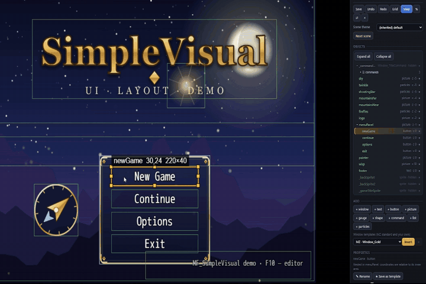
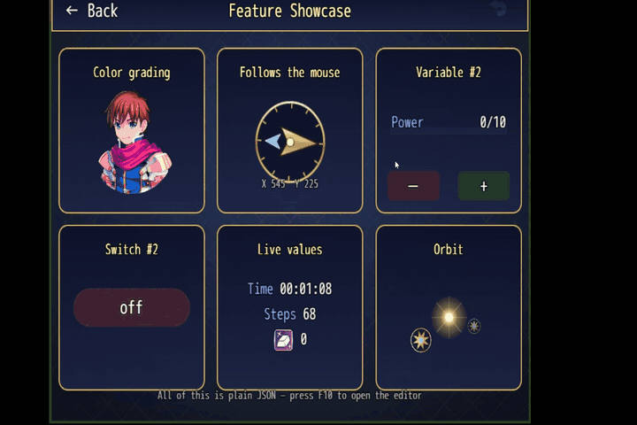
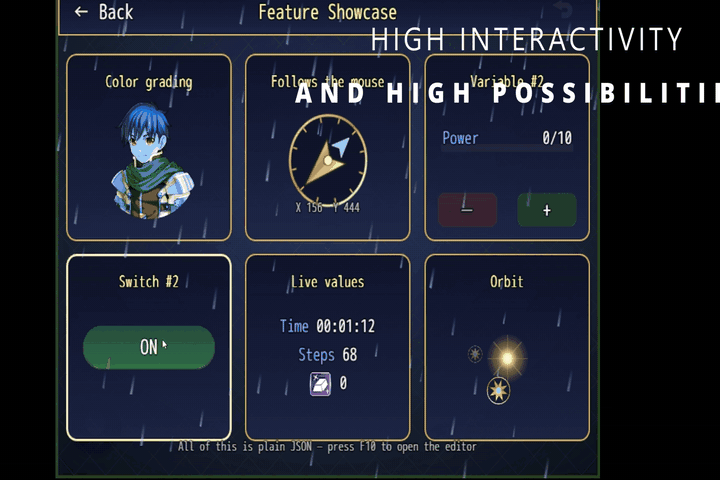
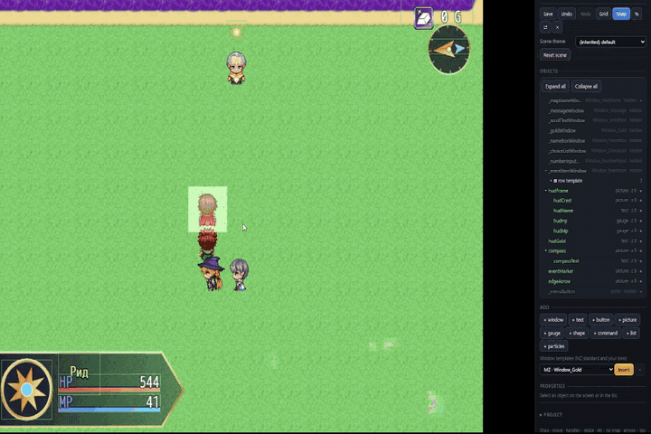

Re-design every screen of RPG Maker MZ. Visually. Without code.
Title · Menus · Battle · Map HUD · Custom scenes
Get started Reference Get it on itch.ioSimpleVisual
MF_SimpleVisual 0.8.0 · Editor 0.7.0 · format v1
A layout runtime and an in-game visual editor (F10). You can move windows, add pictures, gauges, buttons, lists and particles, and build custom scenes and a map HUD.
MF_Core
MF_Core 1.2.1 · required by all MF plugins
The base library for plugin developers: layout units and expressions, conditions, data and save storage, hooks, events, input, tweens and UI primitives.



